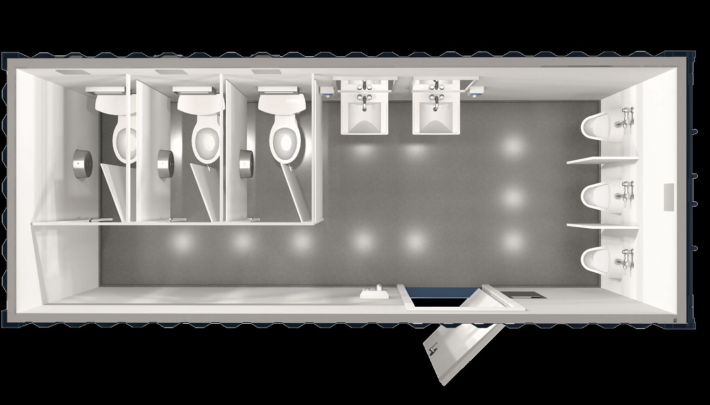

Cold Storage
Container-based cold-storage structures for practical on-site use.
Custom container solutions for cold storage, bathroom stalls, laundromats, retail shops and food/beverage stands.
Container-based cold-storage structures for practical on-site use.

Container platforms configured for restroom applications.

Compact, purpose-built laundry configurations.

Container storefronts designed for flexible commercial use.

Mobile or fixed container structures for serving food and beverages.

Start with the container and build around the specific use case.
620 Fabrication's specialty-build platform extends the same emphasis on durability, customization and practical function to unique applications.

Tell us what the container needs to do.